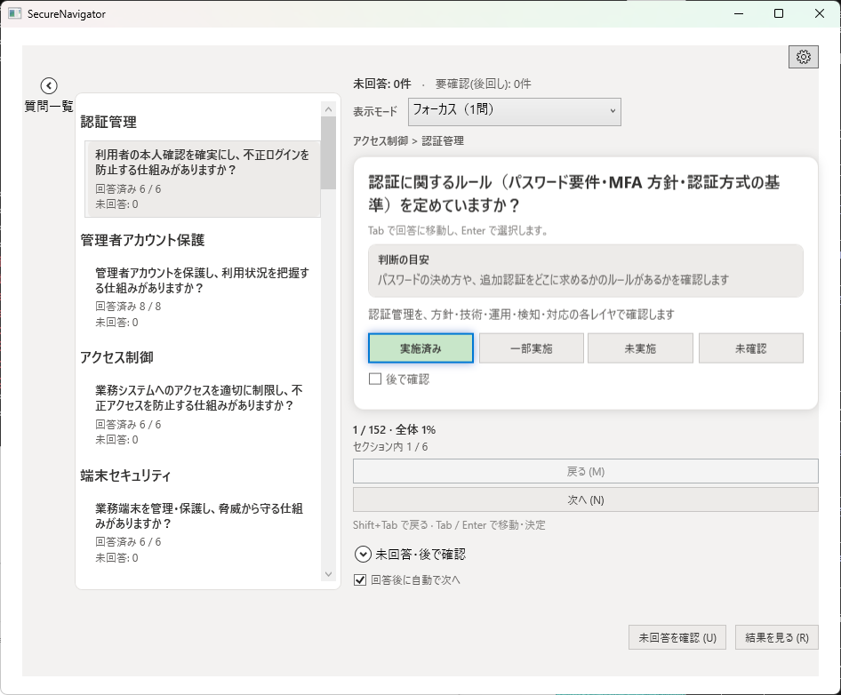
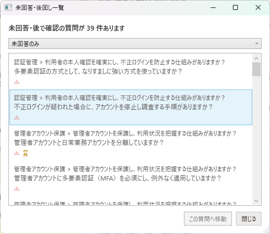
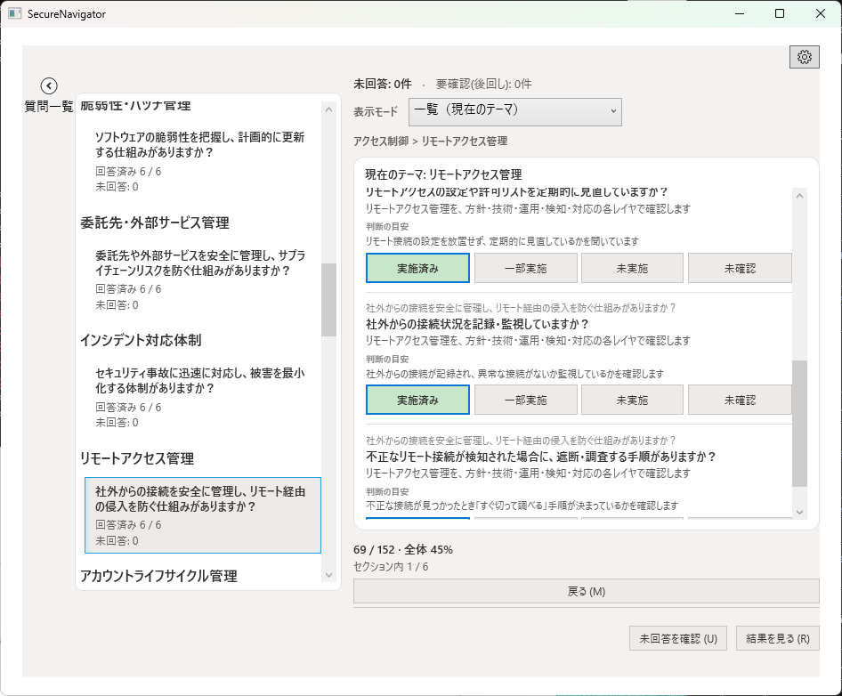
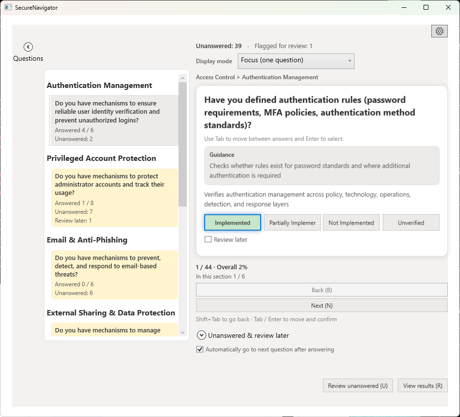
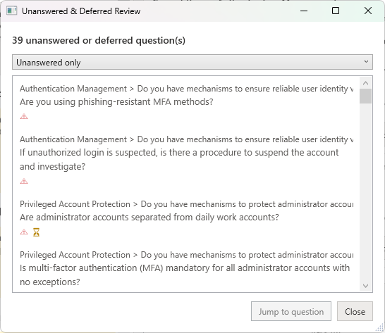
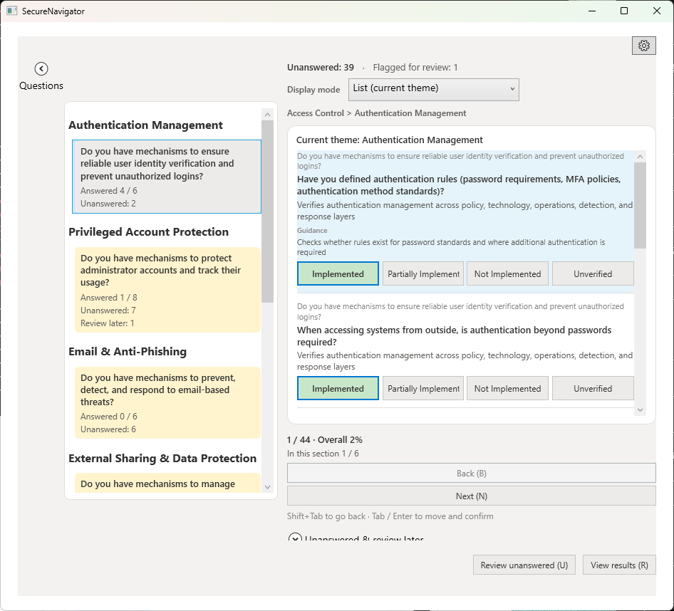

カード UI、回答選択肢、ナビゲーション、表示モード
ヒアリング画面では、組織のセキュリティ対策に関する質問が表示されます。質問はテーマごとにグループ化されており、各テーマ内の質問に順番に回答していきます。「結果を見る」で結果画面に進めます。回答の途中でも暫定結果を確認できます。

各質問はカード形式で表示されます。カードには質問テキスト、所属するテーマ名、および回答選択肢が含まれます。「回答後に自動で次へ」をオンにすると、回答後に自動で次の質問に進みます。
各質問に対して、以下の4つの選択肢から回答を選びます。
| 選択肢 | 意味 |
|---|---|
| 実施済み | 対策が組織内で導入・運用されている。 |
| 一部実施 | 対策は部分的に導入されているが、全体には行き渡っていない。 |
| 未実施 | 対策が導入されていない。 |
| 未確認 | 対策の実施状況が不明。確認が必要な場合に選択。 |
「後で確認」にチェックを入れた質問は、「未回答・後で確認」の一覧でまとめて確認できます。一覧は「未回答または後で確認」「未回答のみ」「後で確認のみ」で絞り込めます。
ヒアリング画面では、以下の方法で質問間を移動できます。

ヒアリング画面には3つの表示モードがあります。
1つの質問だけを画面中央に大きく表示するモードです。集中して1問ずつ回答したい場合に適しています。
同じテーマ内の質問を一覧形式で表示するモードです。複数の質問をまとめて確認・回答したい場合や、回答の全体像を把握したい場合に便利です。
質問を連続して並べて表示するモードです。

今すぐ答えられない質問には、「後で確認」にチェックを入れておきます。チェックした質問は、「未回答・後で確認」の一覧でまとめて確認できます。
Card UI, answer options, navigation, display modes
The Hearing screen presents questions about your organization's security controls. Questions are grouped by theme, and you answer each question within a theme sequentially. Select "View Results" to proceed to the Results screen. A provisional result is available even before all questions are answered.

Each question is displayed as a card. The card contains the question text, the theme it belongs to, and the answer options. When the automatic-advance option is turned on, the next question is displayed automatically after you answer.
For each question, select one of the following four options.
| Option | Meaning |
|---|---|
| Implemented | The control has been deployed and is operational within the organization. |
| Partially Implemented | The control is partially in place but not fully deployed across the organization. |
| Not Implemented | The control has not been deployed. |
| Unverified | The implementation status is unknown and requires verification. |
Questions marked "Review later" can be reviewed together in the "Unanswered & review later" list, which you can filter to show unanswered questions, review-later questions, or both.
The Hearing screen provides multiple ways to navigate between questions.

The Hearing screen offers three display modes.
Displays one question at a time in the center of the screen. This mode is ideal for concentrating on each question individually.
Displays all questions within the same theme in a list format. This mode is useful when you want to review or answer multiple questions at once, or get an overview of all responses within a theme.
Displays the questions one after another in a continuous list.

If you cannot answer a question right away, mark it as "Review later". Marked questions can be reviewed together in the "Unanswered & review later" list.